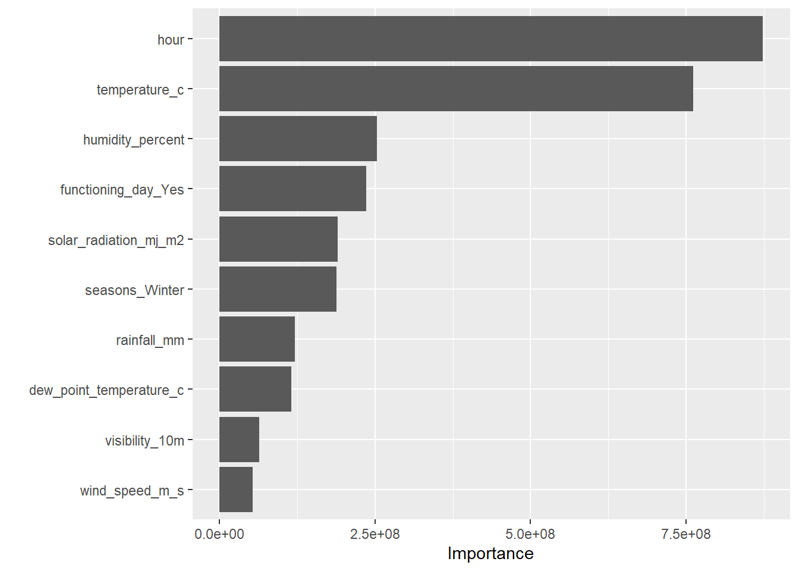

library(tidyverse)
library(tidymodels)
library(janitor)
library(rpart.plot)
library(vip)
library(baguette)
set.seed(123)HW 9 - Modeling Practice
Data import and preprocessing
In this homework I continue working with the Seoul bike sharing data I used in Homework 8. My goal is to compare several modeling approaches for predicting the rented bike count using the remaining variables as predictors.
bike_raw <- read_csv(
"SeoulBikeData.csv",
locale = locale(encoding = "latin1"),
show_col_types = FALSE
)
bike <- bike_raw %>% clean_names()
glimpse(bike)Rows: 8,760
Columns: 14
$ date <chr> "01/12/2017", "01/12/2017", "01/12/2017", "01/…
$ rented_bike_count <dbl> 254, 204, 173, 107, 78, 100, 181, 460, 930, 49…
$ hour <dbl> 0, 1, 2, 3, 4, 5, 6, 7, 8, 9, 10, 11, 12, 13, …
$ temperature_c <dbl> -5.2, -5.5, -6.0, -6.2, -6.0, -6.4, -6.6, -7.4…
$ humidity_percent <dbl> 37, 38, 39, 40, 36, 37, 35, 38, 37, 27, 24, 21…
$ wind_speed_m_s <dbl> 2.2, 0.8, 1.0, 0.9, 2.3, 1.5, 1.3, 0.9, 1.1, 0…
$ visibility_10m <dbl> 2000, 2000, 2000, 2000, 2000, 2000, 2000, 2000…
$ dew_point_temperature_c <dbl> -17.6, -17.6, -17.7, -17.6, -18.6, -18.7, -19.…
$ solar_radiation_mj_m2 <dbl> 0.00, 0.00, 0.00, 0.00, 0.00, 0.00, 0.00, 0.00…
$ rainfall_mm <dbl> 0, 0, 0, 0, 0, 0, 0, 0, 0, 0, 0, 0, 0, 0, 0, 0…
$ snowfall_cm <dbl> 0, 0, 0, 0, 0, 0, 0, 0, 0, 0, 0, 0, 0, 0, 0, 0…
$ seasons <chr> "Winter", "Winter", "Winter", "Winter", "Winte…
$ holiday <chr> "No Holiday", "No Holiday", "No Holiday", "No …
$ functioning_day <chr> "Yes", "Yes", "Yes", "Yes", "Yes", "Yes", "Yes…bike <- bike %>%
mutate(
holiday = factor(holiday),
seasons = factor(seasons),
functioning_day = factor(functioning_day)
)
if ("date" %in% names(bike)) {
bike <- bike %>% select(-date)
}set.seed(123)
bike_split <- initial_split(bike, prop = 0.8, strata = rented_bike_count)
bike_train <- training(bike_split)
bike_test <- testing(bike_split)
set.seed(123)
bike_folds <- vfold_cv(bike_train, v = 10, strata = rented_bike_count)Baseline recipe
bike_rec <- recipe(rented_bike_count ~ ., data = bike_train) %>%
step_dummy(all_nominal_predictors()) %>%
step_zv(all_predictors()) %>%
step_normalize(all_numeric_predictors())
bike_rec── Recipe ──────────────────────────────────────────────────────────────────────── Inputs Number of variables by roleoutcome: 1
predictor: 12── Operations • Dummy variables from: all_nominal_predictors()• Zero variance filter on: all_predictors()• Centering and scaling for: all_numeric_predictors()1. Multiple Linear Regression (MLR)
mlr_spec <- linear_reg() %>% set_engine("lm")
mlr_wf <- workflow() %>%
add_model(mlr_spec) %>%
add_recipe(bike_rec)
mlr_fit <- mlr_wf %>% fit(data = bike_train)
mlr_test_preds <- predict(mlr_fit, new_data = bike_test) %>% bind_cols(bike_test)
mlr_test_metrics <- mlr_test_preds %>%
metrics(truth = rented_bike_count, estimate = .pred) %>%
filter(.metric %in% c("rmse","mae"))
mlr_test_metricsmlr_coefs <- mlr_fit %>% extract_fit_parsnip() %>% tidy()
mlr_coefs2. LASSO Model
lasso_spec <- linear_reg(penalty = tune(), mixture = 1) %>% set_engine("glmnet")
lasso_wf <- workflow() %>% add_model(lasso_spec) %>% add_recipe(bike_rec)
lasso_grid <- grid_regular(penalty(range = c(-4,0)), levels = 20)
lasso_res <- lasso_wf %>%
tune_grid(resamples = bike_folds, grid = lasso_grid, metrics = metric_set(rmse,mae))
best_lasso <- lasso_res %>% select_best(metric="rmse")
best_lassofinal_lasso_wf <- lasso_wf %>% finalize_workflow(best_lasso)
final_lasso_fit <- final_lasso_wf %>% fit(data=bike_train)
lasso_test_preds <- predict(final_lasso_fit, new_data=bike_test) %>% bind_cols(bike_test)
lasso_test_metrics <- lasso_test_preds %>%
metrics(truth=rented_bike_count, estimate=.pred) %>%
filter(.metric %in% c("rmse","mae"))
lasso_test_metricslasso_coefs <- final_lasso_fit %>% extract_fit_parsnip() %>% tidy()Warning: package 'glmnet' was built under R version 4.3.3
Attaching package: 'Matrix'The following objects are masked from 'package:tidyr':
expand, pack, unpackLoaded glmnet 4.1-8lasso_coefs3. Regression Tree
tree_spec <- decision_tree(cost_complexity=tune(), tree_depth=tune(), min_n=tune()) %>%
set_engine("rpart") %>% set_mode("regression")
tree_wf <- workflow() %>% add_model(tree_spec) %>% add_recipe(bike_rec)
tree_grid <- grid_regular(
cost_complexity(range=c(-4,-1)),
tree_depth(range=c(2,10)),
min_n(range=c(5,30)),
levels=4
)
tree_res <- tree_wf %>%
tune_grid(resamples=bike_folds, grid=tree_grid, metrics=metric_set(rmse,mae))
best_tree <- tree_res %>% select_best(metric="rmse")
best_treefinal_tree_wf <- tree_wf %>% finalize_workflow(best_tree)
final_tree_fit <- final_tree_wf %>% fit(data=bike_train)
tree_test_preds <- predict(final_tree_fit, new_data=bike_test) %>% bind_cols(bike_test)
tree_test_metrics <- tree_test_preds %>%
metrics(truth=rented_bike_count, estimate=.pred) %>%
filter(.metric %in% c("rmse","mae"))
tree_test_metricstree_fit_obj <- final_tree_fit %>% extract_fit_parsnip() %>% pluck("fit")
rpart.plot(tree_fit_obj)Warning: Cannot retrieve the data used to build the model (so cannot determine roundint and is.binary for the variables).
To silence this warning:
Call rpart.plot with roundint=FALSE,
or rebuild the rpart model with model=TRUE.Warning: labs do not fit even at cex 0.15, there may be some overplotting
4. Bagged Tree
bag_spec <- bag_tree(tree_depth=tune(), min_n=tune()) %>%
set_engine("rpart", times=50) %>% set_mode("regression")
bag_wf <- workflow() %>% add_model(bag_spec) %>% add_recipe(bike_rec)
bag_grid <- grid_regular(
tree_depth(range=c(2,10)),
min_n(range=c(5,30)),
levels=5
)
bag_res <- bag_wf %>%
tune_grid(resamples=bike_folds, grid=bag_grid, metrics=metric_set(rmse,mae))
best_bag <- bag_res %>% select_best(metric="rmse")
best_bagfinal_bag_wf <- bag_wf %>% finalize_workflow(best_bag)
final_bag_fit <- final_bag_wf %>% fit(data=bike_train)
bag_test_preds <- predict(final_bag_fit, new_data=bike_test) %>% bind_cols(bike_test)
bag_test_metrics <- bag_test_preds %>%
metrics(truth=rented_bike_count, estimate=.pred) %>%
filter(.metric %in% c("rmse","mae"))
bag_test_metrics5. Random Forest
rf_spec <- rand_forest(mtry=tune(), trees=500, min_n=tune()) %>%
set_engine("ranger", importance="impurity") %>%
set_mode("regression")
rf_wf <- workflow() %>% add_model(rf_spec) %>% add_recipe(bike_rec)
rf_grid <- grid_regular(
mtry(range=c(3,15)),
min_n(range=c(5,30)),
levels=5
)
rf_res <- rf_wf %>%
tune_grid(resamples=bike_folds, grid=rf_grid, metrics=metric_set(rmse,mae))→ A | warning: ! 15 columns were requested but there were 14 predictors in the data.
ℹ 14 predictors will be used.There were issues with some computations A: x1There were issues with some computations A: x3There were issues with some computations A: x6There were issues with some computations A: x10There were issues with some computations A: x15There were issues with some computations A: x16There were issues with some computations A: x18There were issues with some computations A: x21There were issues with some computations A: x25There were issues with some computations A: x30There were issues with some computations A: x31There were issues with some computations A: x33There were issues with some computations A: x36There were issues with some computations A: x40There were issues with some computations A: x45There were issues with some computations A: x46There were issues with some computations A: x48There were issues with some computations A: x51There were issues with some computations A: x55There were issues with some computations A: x60There were issues with some computations A: x61There were issues with some computations A: x63There were issues with some computations A: x66There were issues with some computations A: x70There were issues with some computations A: x75There were issues with some computations A: x76There were issues with some computations A: x78There were issues with some computations A: x81There were issues with some computations A: x85There were issues with some computations A: x90There were issues with some computations A: x91There were issues with some computations A: x93There were issues with some computations A: x96There were issues with some computations A: x100There were issues with some computations A: x105There were issues with some computations A: x106There were issues with some computations A: x108There were issues with some computations A: x111There were issues with some computations A: x115There were issues with some computations A: x120There were issues with some computations A: x121There were issues with some computations A: x123There were issues with some computations A: x126There were issues with some computations A: x130There were issues with some computations A: x135There were issues with some computations A: x136There were issues with some computations A: x138There were issues with some computations A: x141There were issues with some computations A: x145There were issues with some computations A: x150
There were issues with some computations A: x150best_rf <- rf_res %>% select_best(metric="rmse")
best_rffinal_rf_wf <- rf_wf %>% finalize_workflow(best_rf)
final_rf_fit <- final_rf_wf %>% fit(data=bike_train)
rf_test_preds <- predict(final_rf_fit, new_data=bike_test) %>% bind_cols(bike_test)
rf_test_metrics <- rf_test_preds %>%
metrics(truth=rented_bike_count, estimate=.pred) %>%
filter(.metric %in% c("rmse","mae"))
rf_test_metricsvip(final_rf_fit %>% extract_fit_parsnip())
Compare All Models
model_metrics <- bind_rows(
mlr_test_metrics %>% mutate(model="MLR"),
lasso_test_metrics %>% mutate(model="LASSO"),
tree_test_metrics %>% mutate(model="Regression Tree"),
bag_test_metrics %>% mutate(model="Bagged Tree"),
rf_test_metrics %>% mutate(model="Random Forest")
)
model_metricsFit Best Model to Full Data
final_best_wf <- final_rf_wf
best_full_fit <- final_best_wf %>% fit(data=bike)
best_full_fit══ Workflow [trained] ══════════════════════════════════════════════════════════
Preprocessor: Recipe
Model: rand_forest()
── Preprocessor ────────────────────────────────────────────────────────────────
3 Recipe Steps
• step_dummy()
• step_zv()
• step_normalize()
── Model ───────────────────────────────────────────────────────────────────────
Ranger result
Call:
ranger::ranger(x = maybe_data_frame(x), y = y, mtry = min_cols(~9L, x), num.trees = ~500, min.node.size = min_rows(~5L, x), importance = ~"impurity", num.threads = 1, verbose = FALSE, seed = sample.int(10^5, 1))
Type: Regression
Number of trees: 500
Sample size: 8760
Number of independent variables: 14
Mtry: 9
Target node size: 5
Variable importance mode: impurity
Splitrule: variance
OOB prediction error (MSE): 50428.03
R squared (OOB): 0.8787851